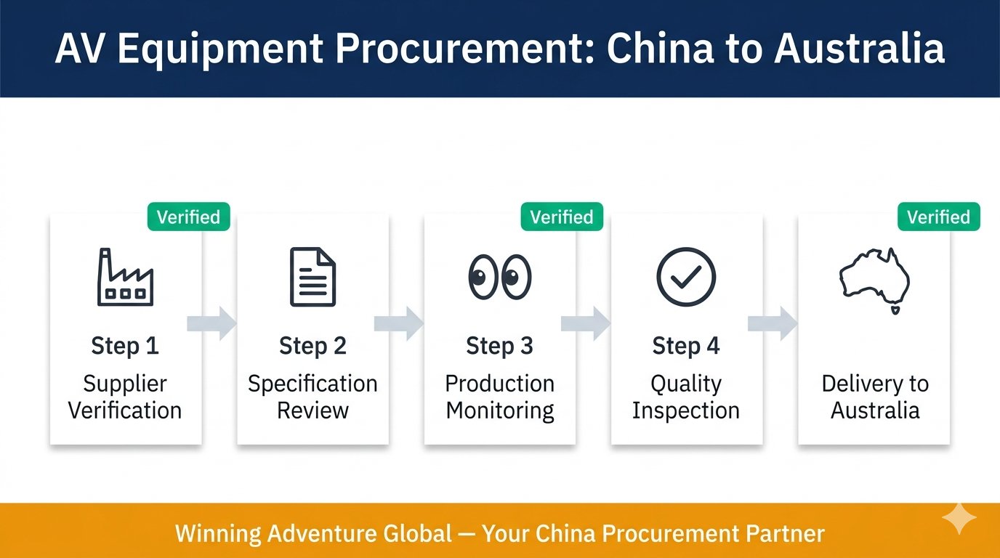
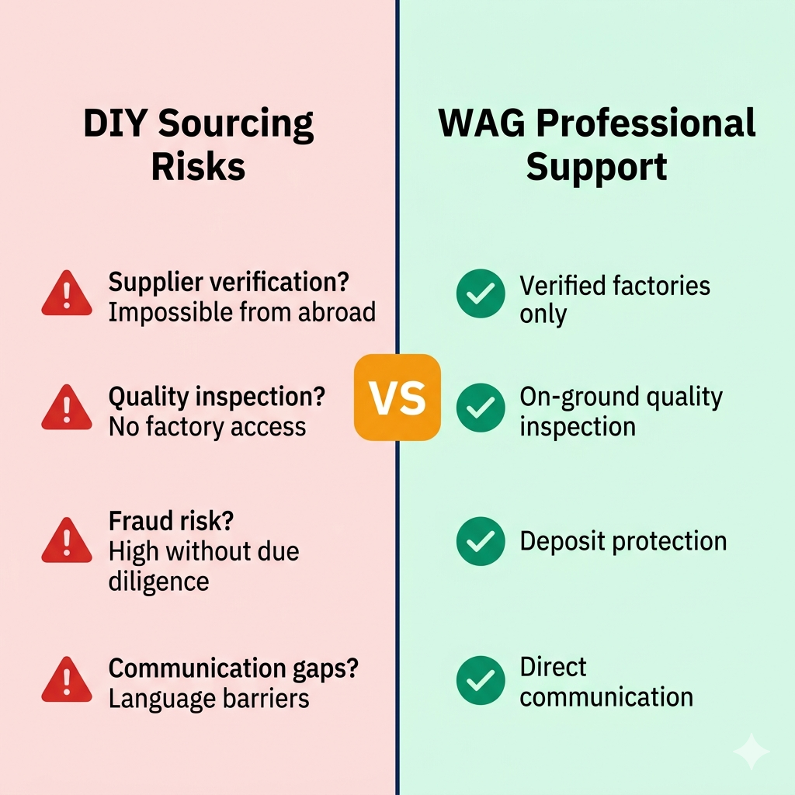
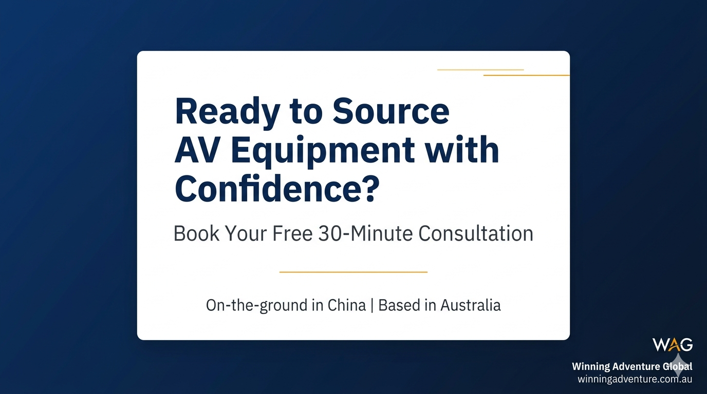

Post order: Main Tweet → Poll (reply to Tweet 1) → Link Tweet (reply to Tweet 1)
Australian businesses increasingly turn to China for AV equipment procurement. The economics are compelling: pro audio systems, stage lighting, LED displays, and conference equipment cost significantly less when sourced directly from Chinese manufacturers. Yet the path from initial inquiry to delivered product is filled with risks that catch unprepared buyers.
AV equipment occupies a specific niche in the manufacturing landscape. Unlike consumer electronics or standard electrical components, professional AV equipment demands:
The single most persistent problem in China AV equipment sourcing is distinguishing genuine factories from trading companies.
Professional AV equipment requires rigorous quality verification that goes beyond checking whether products arrive intact.
Fraud represents the most severe risk in international AV equipment procurement. Common patterns include advance payment scams, specification fraud, and fake certifications.
Professional AV equipment procurement from China involves systematic steps: Supplier Identification → Specification Development → Production Monitoring → Quality Inspection → Logistics and Compliance.
Winning Adventure Global provides end-to-end procurement support: Supplier verification, specification development, production monitoring, quality inspection, logistics coordination, and ongoing support.
... (article continues with 3,000+ words total)
git add . && git commit -m "feat: add AV equipment procurement guide" && git push origin master

CTA: 16:9 landscape